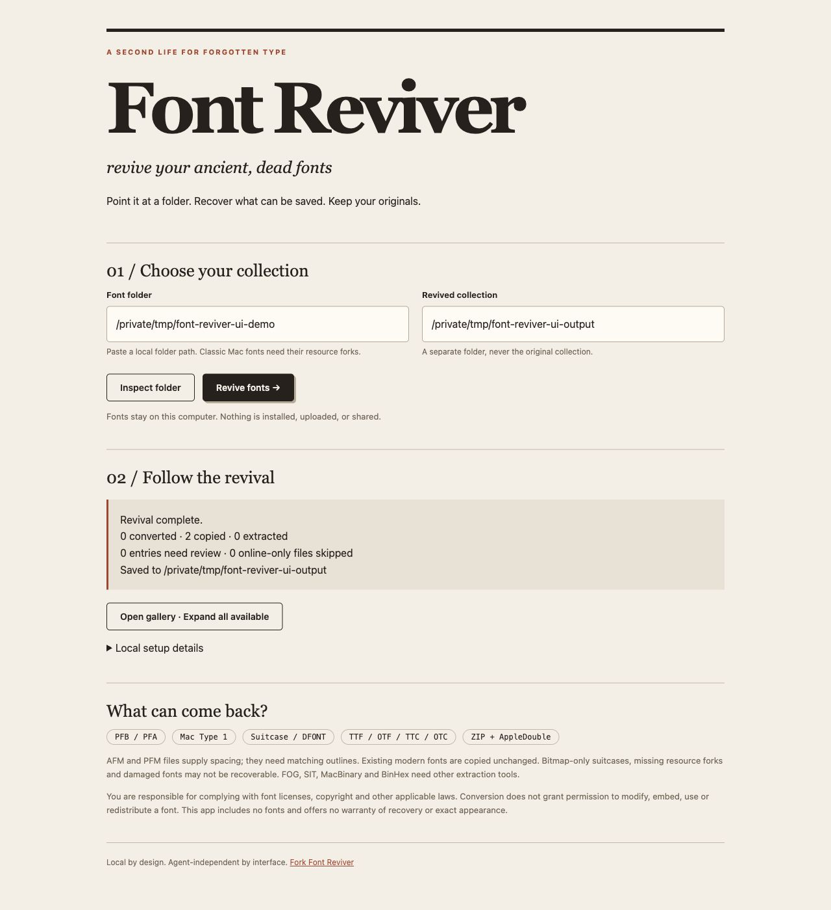

A second life for forgotten type
Font
Reviver.
revive your ancient, dead fonts
Rescue legacy font collections. Recover usable outlines, keep your originals, and meet your type again in a modern, browsable library.
Free & open source. Runs on your computer. No font uploads.
A fresh start.
From forgotten folder to fresh collection
Less digging.
More designing.
Those old suitcases, printer fonts, and mystery files deserve another look.
- 01
Point at a folder
Keep the whole font family together. Inspect a desktop folder, including its subfolders and supported ZIP archives.
- 02
Revive what’s recoverable
Convert scalable PostScript outlines to OTF. Extract usable suitcase fonts. Copy modern fonts unchanged into the same collection.
- 03
Rediscover your type
Search your gallery, expand all the specimens, and review the exceptions. Your originals remain exactly where they were.
Choose your way in
One revival.
Four ways to start.
A local browser app for browsing. A command line for batching. An open interface for whatever comes next.
Your collection, with a view.
Install once, open the local app, and paste the path to your font folder. Everything runs on your computer.
brew install python git fontforge
python3 -m venv ~/.venvs/font-reviver
source ~/.venvs/font-reviver/bin/activate
python -m pip install 'git+https://github.com/AlexBloom/font-reviver.git@main'
font-reviver uiYou’ll need Git and Python 3.10+ (3.11+ recommended). FontForge handles legacy outline conversion. Homebrew installs the macOS dependencies above.
Read the full setup guideA useful home for old type
Local app.
Lasting collection.
Open a simple interface in your browser. Choose a source folder, save to a separate destination, and browse the result.
See the output files
Know what’s in the box
Old files.
Clear next steps.
Font Reviver identifies formats by their contents, not just their filenames.
Recoverable scalable outlines become OpenType OTFs.
Scalable fonts are extracted or converted when their resource forks are intact.
Validated and copied unchanged. No unnecessary conversion.
Matched spacing data accompanies the outlines. Metrics alone aren’t a font.
Supported archives and resource-fork sidecars are inspected together.
A few good questions
Before you
dig in.
Do I upload my fonts here?
No. This page introduces the tool. Install Font Reviver to use it locally. Font conversion and font files stay on your computer.
Can I use it with my agent or another interface?
Yes. Use the command line, import the Python library, or connect a local interface to the HTTP API. The portable skill gives agents the workflow; it does not depend on a particular model or agent SDK. Read the interface contract.
What if some fonts don’t come back?
The report lists files needing attention. Missing outlines or resource forks, bitmap-only fonts, and damaged files may not be recoverable. SIT, FOG, MacBinary, and BinHex need separate extraction tools. Legacy FOND suitcase kerning is not imported, so check spacing and appearance in your design app.
What about cloud-synced collections?
Make your font folder available offline first. Recognized online-only placeholders are skipped. Keep companion files together and preserve classic Mac resource forks when moving or archiving them.
Does converting a font change its license?
No. You are responsible for complying with font licenses, copyright, and applicable laws. Check your rights before converting, modifying, using, embedding, or redistributing fonts. Font Reviver is MIT-licensed; that license does not apply to fonts you process. Read the disclaimer.
Your archive is calling